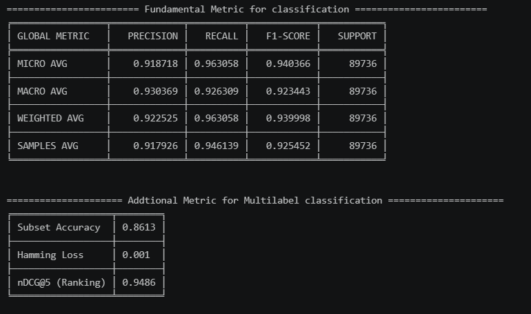
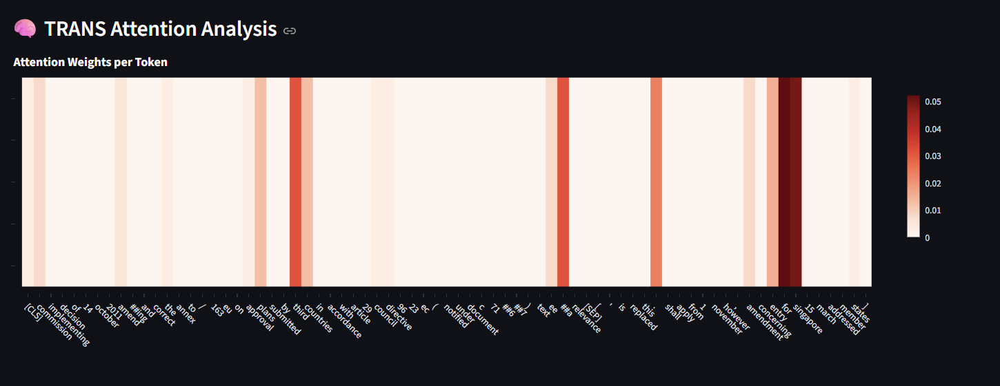

Extreme Multi-Label Text Classification
with Label-Wise Attention (LWA)
A tagging engine that assigns the correct labels out of 4,000+ to a document — including labels never seen during training. Benchmarked on EURLEX-57K (EU legal corpus) and validated against real student questions on public Stack Exchange.
🏆 Key Achievements
- Pipeline Design: Multi-segment Transformer backbone extending context to 1,024 tokens via
Title + Body + Recitalsfusion — enabling full comprehension of long legal documents. [p.20] - Loss Engineering: Asymmetric Loss (ASL) to suppress the ~4,187 negative-label majority per document, paired with weight balancing for rare labels (<0.001% frequency). [p.21–22]
- Training Strategy: Semantic Warm-start fine-tuning anchors the encoder's semantic compass from epoch 1, accelerating convergence. Raised Macro-F1 from 0.03 (vanilla) to 0.25. [p.24]
- Efficiency: Near-SOTA precision (P@1 > 0.88) with only 33M parameters — substantially lower inference cost than LegalBERT / RoBERTa-based baselines. [p.27]
- Explainability: Attention Rollout traces which tokens drove each tag prediction — auditable output, not a black box.
Why Label-Wise Attention?
Standard multi-label classifiers compress a document into one vector shared by every label. LWA instead learns a separate attention head per label, letting each tag attend to the specific words that justify it. This decouples the encoder from the label space, keeps inference tractable at 4k+ classes, and naturally surfaces zero-shot generalisation because unseen labels can still attend to semantically relevant tokens.
📊 Results
Benchmark vs. SOTA [p.27] [paper]
| Model | Micro F1 | Macro F1 | P@1 | R@1 | nDCG@5 | Hamming |
|---|---|---|---|---|---|---|
| RoBERTa* (SOTA) | 0.685 | 0.220 | 0.922 | 0.210 | 0.823 | — |
| BIGRU-LWAN (L2V) | 0.612 | 0.185 | 0.913 | 0.198 | 0.804 | — |
| HAN | 0.584 | 0.142 | 0.894 | 0.182 | 0.778 | — |
| Vanilla MiniLM (baseline) | 0.051 | 0.031 | 0.170 | 0.035 | 0.105 | 0.00160 |
| BiLSTM-ASLCB (ours) | 0.645 | 0.247 | 0.889 | 0.203 | 0.755 | 0.00076 |
| Trans-ASLCB (ours) | 0.639 | 0.251 | 0.881 | 0.200 | 0.761 | 0.00085 |
*RoBERTa fine-tuned as LegalBERT. Our models use a 33M-param backbone.
Real-World Validation — Stack Exchange Student Questions
To test generalisation beyond the EURLEX corpus, the trained model was run against real questions posted by students on public Stack Exchange. Results show strong transfer:

Full metric breakdown over 89,736 label decisions on Stack Exchange questions — the model generalises well outside its training domain.
🚀 Live Demo
Paste any document and watch the model tag it in real time. The app also exposes Attention Rollout so you can see which tokens drove each prediction.
Cold start may take a few seconds on the cloud server. Open full screen →
Attention Rollout — What the Model "Sees"
Each token's final attention weight is propagated back through all layers via Attention Rollout. Redder = higher weight. The model correctly focuses on named entities (Singapore, Commission) and suppresses dates, numbers, and filler words.

🔬 Exploratory Data Analysis — EURLEX-57K
Label Distribution

Label Co-occurrence Matrix